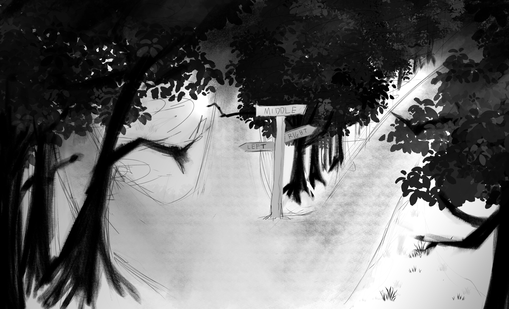
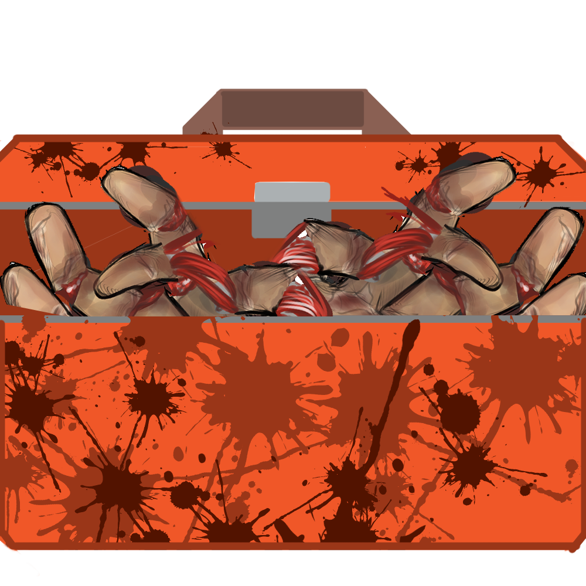

I am Kaitlyn Gray, a second year Game Design and Development major at RIT.
As a game developer, I have experience with project management especially focused in unity development. I have been coding in various languages for years and give my all in everything I commit to. After graduation, my goal is to find a game development role where I can work on creating games for people to grow up on and fall in love with, just as I have. I have a lifelong passion for gaming, and it’s the primary reason why I’ve decided to pursue game development. I want to make games that inspire others.
Fork in the Road is a point and click adventure game for anyone who has struggled with self-doubt and has found themselves in an endless spiral of negativity. The game allows players to confront and conquer their emotions. It will create an experience that makes everyone feel heard and teaches them how to step away from their negative thoughts.
Contributions

Handy-Man is a puzzle game in C# and MonoGame based on the theme “Do It Yourself,” featuring a protagonist who transforms his hand into tools to repair appliances.
Contributions
